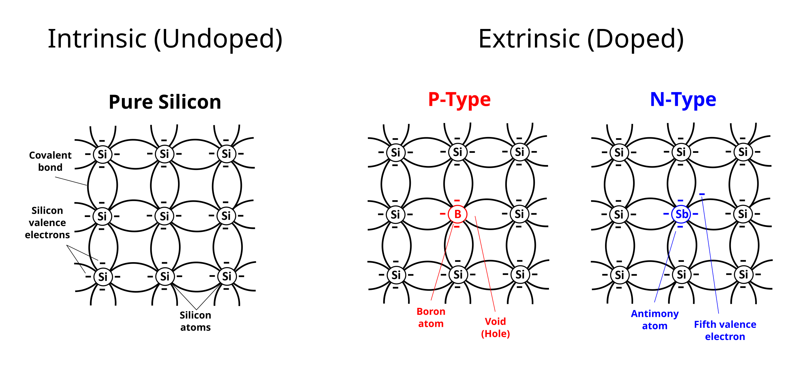
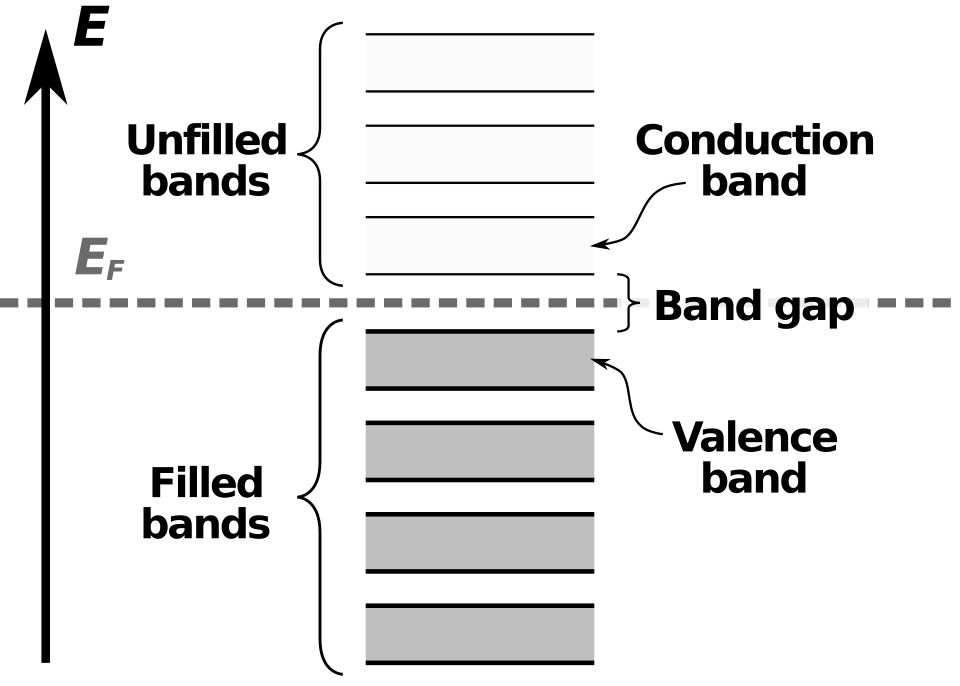
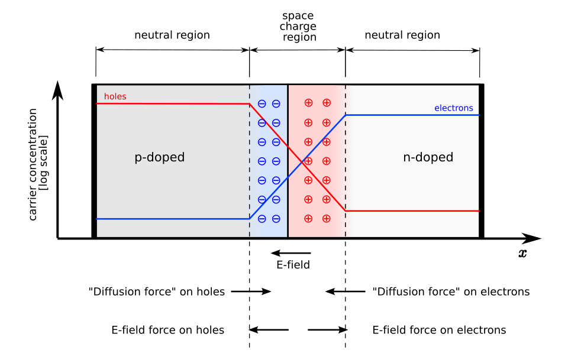
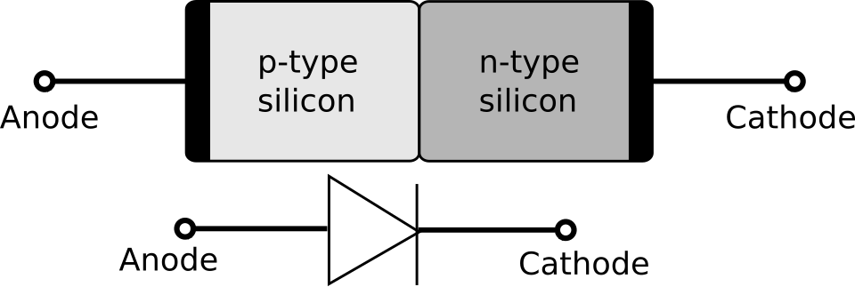

The interface is the device - Herbert Kroemer
Every element in the periodic table has at least an electron in their atomic structure. Thus there is a potential for these electrons to move around and create an electric field (also a magnetic field).
In common parlance we use the terms conductors and insulators. Conductors are those elements which allow an electric current to flow through them, example copper which has an atomic number of 29. Sulfur with an atomic number of 16 is an insulator and it does not allow electric current to flow. Both have electrons but only copper is able to conduct electricity. This is because of the way copper atoms are connected to each other. They allow valence electrons to move freely at normal conditions. To start this process of movement of electrons (and thereby create electric current) there has to be a force, an energy difference. This is called voltage differential. So the two ends of a copper wire will immediately allow electrons to flow through if one end of the copper wire is at a ‘higher energy’ level than the other end. This tiny bit of energy required to create conduction (which is actually getting the valence electrons to move around) is technically referred to getting the electrons in an energy band called the conduction band. The inverse happens for Sulfur. The electrons in the valence shell under normal conditions are not able jump into this conduction band even if energy is supplied in terms of voltage difference. So no electric current flows. All this changes basis the conditions, for instance the temperature.
A side note: Almost all of the physics related posts is for conceptual understanding and not mathematical rigor.
There is another class of elements in the periodic table called semi-conductors. Silicon is one of the most common elements available on Earth. At normal temperatures Silicon does not allow its electrons in its valence shell to reach the conduction band. It takes around 1.1 eV (electron Volt is the unit for the energy) to make its valence electron move around. Silicon has 14 electrons and as per Bohr’s model the distribution is \(1s^2\) \(2s^2\) \(2p^6\) \(3s^2\) \(3p^2\). Thus the third orbit has 4 electrons. 4 electrons of one silicon atom forms covalent bonds with other silicon atoms. When the 1.1 eV is supplied one electron from this third orbit jumps off into the conduction band and moves freely creating electric current. But when the electron moves away it leaves a ‘hole’. Some other electron from the neighboring silicon atom can jump and occupy this position. So in a way the hole is moving backwards and electrons are moving forward. That is the mental model.

I wanted to visualize how much energy is 1eV. The technical definition is the amount of kinetic energy a single electron gains when it passes in vacuum through an electric potential difference of 1 Volt. In terms of Joules it is very small \(1.602 * 10^-19\) Joules. To make a comparison a 10 watt bulb sold in a store utilizes around 10 Joules of energy per second. Meaning 1 eV is the energy consumed by a 10 W bulb in a miniscule \(10^-20\) seconds.
When an ‘impurity’ such as Phosphorus is added to Silicon the conductivity property of this composite material changes. Phosphorus had 5 valence electrons. So 4 electrons of Phosphorus are shared by its neighboring Silicon atoms but that excess one electron does not form a covalent bond with its neighbors. It ‘floats freely’ thus triggers electric current. Although there is an excess electron in this doped silicon lattice its overall charge is neutral because the Phosphorus nucleus would have the appropriate proton number. Since there is excess of electrons ‘floating’ around it is called N-type semiconductor.
Now instead of Phosphorus if we add Boron which has 3 electrons in its valence shell then we have an empty spot essentially. An electron from a neighboring silicon atom can now move into this vacant spot, when it does so it leaves a hole behind. Now another electron can move into this new spot. So we get a chain of movement of holes which is in the opposite direction of the electrons. Since this is notionally positive we call it P-type semiconductor.

The other mental model which is used to understand semiconductors. Electrons tend to settle down in lower energy states, as per this model in lower energy bands. The higher energy bands remain vacant. So we have the valence band which is filled with electrons and then a band gap and a conduction band which is empty. Electrons need to move from this valence band through this band gap to the conduction band to start conducting energy. To get the electron moving we need to provide a bit of energy so it moves up which is basically the same as getting it over a certain hurdle to either leave behind a hole and get going. The energy required for silicon is just 1.12 eV. Thats very very small. This model is essential for actually doing computations and conducting measurements.

As the name implies PN Junction is the boundary of the surface where a P-type doped silicon touches N-type doped silicon. The N-type has many free electrons whereas the P-type has many holes. By just diffusing the two doped surfaces a depletion region emerges at the junction. There is no electricity yet but electrons move from the N-type to the P-type whereas holes diffuse from the P-type to the N-type. It is essentially movement from high concentration to low concentration. As a result the electrons which moved into the P-type now recombine with the holes and they disappear as mobile carriers. The same phenomena happens in the N-type side also. This depletion region towards the N-side has lost electrons so its effectively remains with positive donor ions. The P-side of the depletion region is left with negative acceptor ions.
Now since we have positive and negative ions in the depletion region an electric field is created. This electric field pushes the electrons back on N-side and pushes the holes on the P-side. We have a state of equilibrium, a status quo, where the electric field force is equal to the diffusion force of the electrons and holes. So far no external energy is applied in terms of a voltage difference.
If electrons on the N-side get an energy push of some quantity they will hop onto the depletion region and move towards into the P-side. The quantity of energy is called the barrier voltage and it is 0.6 Volts for silicon.

When the P-side is given a positive voltage while the N-side has negative voltage then the electrons on N-side get very attracted and move towards the junction, cross the barrier and recombine on the other side. Similarly holes are pushed away from the P-side. Current starts flowing since depletion region is narrowed. This is called Forward Bias.
In Negative Bias/Reverse Bias the opposite happens resulting in increasing size of the depletion region. The electrons on N-side basically get attracted to positive voltage and the holes on the P-side get attracted towards the negative voltage. No Current flows through effectively.
Thus a PN Junction works like a valve, a diode.

I have built this very basic circuit on a breadboard to show how a diode (representing a PN Junction) allows current to flow only in one direction.